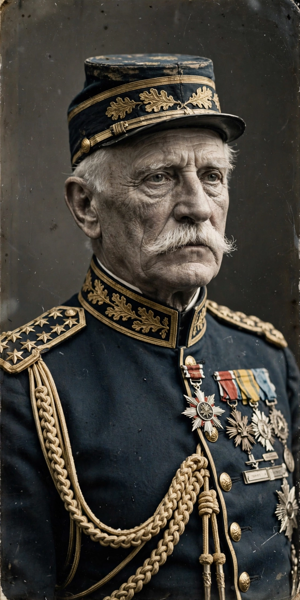

Philippe Pétain

| Philippe Pétain | |
| Born | 24 April 1856, Cauchy-à-la-Tour, France |
|---|---|
| Died | 23 July 1951, Île d'Yeu, France |
| Office | Chief of the French State (Vichy), 1940–1944; Prime Minister (1940) |
| Military fame | Commander at the Battle of Verdun, 1916; Commander-in-Chief, 1917–1918 |
| Honours | Marshal of France (1918) |
Henri Philippe Bénoni Omer Pétain (24 April 1856 – 23 July 1951), commonly known as Marshal Pétain, was a French military leader who became a national hero in the First World War as the defender of Verdun, and who then headed the collaborationist Vichy regime during the Second World War. His career traces the arc from saviour of France in 1916 to convicted traitor in 1945.
- First World War
- Interwar years
- Vichy France
- Trial and death
First World War
Pétain was an infantry colonel nearing retirement in 1914, known for his emphasis on firepower and the defensive. The war made his reputation: promoted rapidly, he took command at the Battle of Verdun in February 1916 and organised the defence — the rotating supply of troops along the Voie Sacrée and the rallying cry associated with him, "Ils ne passeront pas" ("They shall not pass"). In May 1917, after the failure of the Nivelle offensive and the outbreak of mutinies in the French army, Pétain became commander-in-chief; by improving leave, food and rest and limiting costly offensives, he restored the army's fighting capacity and led it through the victorious campaigns of 1918. He was made a Marshal of France in November 1918.
Interwar years
Between the wars Pétain was France's most prestigious soldier, inspector-general of the army and vice-president of the Supreme War Council; his defensive doctrines underlay the thinking behind the Maginot Line. He served as ambassador to Franco's Spain in 1939. Recalled to government in May 1940 as the German offensive unfolded, he became deputy to Prime Minister Paul Reynaud and the leading advocate of an armistice.
Vichy France
After Reynaud's resignation on 16 June 1940, Pétain became prime minister and concluded the armistice with Germany on 22 June. On 10 July the National Assembly, meeting at Vichy, voted him full powers; as "Chief of the French State" he ruled the unoccupied zone (and, in principle, the whole country) under the slogan Travail, Famille, Patrie ("Work, Family, Fatherland"), pursuing the authoritarian, traditionalist "National Revolution". His government collaborated with the occupier — Pétain famously shook Hitler's hand at Montoire in October 1940 — enacted antisemitic laws on its own initiative, and assisted in the deportation of Jews. After the Allied landings in North Africa in November 1942, Germany occupied the whole of France, and Pétain's regime became an increasingly hollow puppet government under Pierre Laval. In August 1944 the Germans removed him to Sigmaringen in Germany.
Trial and death
Pétain returned voluntarily to France in April 1945 and was tried for treason that summer. The court sentenced him to death; Charles de Gaulle commuted the sentence to life imprisonment in view of his age and Great War record. Pétain died in confinement on the Île d'Yeu in 1951, aged 95. His role remains one of the most contested questions in French memory; French presidents long laid wreaths on his tomb as a Verdun commander, a practice ended in later decades.
See also: Paul Reynaud; Armistice of 22 June 1940; Vichy France; French Resistance; Battle of Verdun.